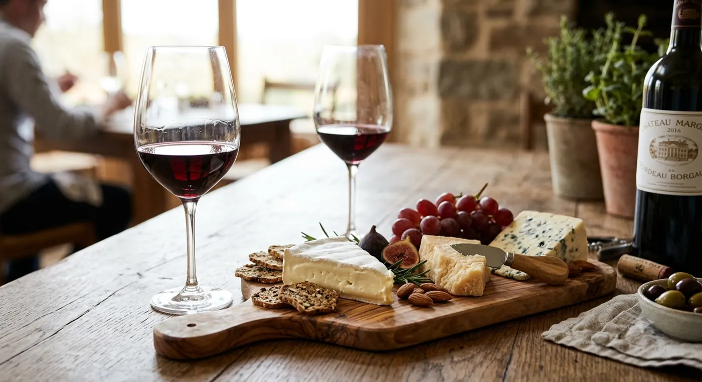

L'Uva che Aspetta: Un Racconto e una Poesia per il Nero d'Avola

Sopra l'armadio di mia nonna, coricata su un fianco su uno strofinaccio piegato, in una camera da letto che ogni agosto arrivava a quaranta gradi, c'era una bottiglia di vino rosso. È rimasta lì undici anni. So che erano undici perché ne avevo sette quando l'ho notata per la prima volta e diciotto quando è scesa, e ho passato una parte consistente del tempo in mezzo a pensarci.
Era, va detto subito, nel posto peggiore possibile. Caldo, luminoso, e in piedi per metà dell'anno perché qualcuno continuava a urtarla. Se volessi progettare un ambiente per distruggere una bottiglia di vino, costruiresti la camera da letto di mia nonna e poi ci aggiungeresti l'armadio.
Lei lo sapeva. Non era una donna stupida. Aveva semplicemente una teoria diversa su a cosa servisse quella bottiglia.
Le occasioni che non erano abbastanza
La bottiglia era conservata. Questo in casa si sapeva come si sapeva dov'era il quadro elettrico. Quello che in undici anni non è mai stato stabilito è per cosa fosse conservata.
Si è sposato mio zio. Non quello.
È nato mio cugino, e poi il fratello di mio cugino. Nemmeno quello — anche se la seconda volta si è spinta fino a tirare giù la bottiglia, tenerla in mano, leggere l'etichetta come se fosse una lettera, e rimetterla su.
Mio nonno si è ripreso da qualcosa che in famiglia è sempre stato chiamato soltanto «il fatto di marzo». Lei ha cucinato per diciannove persone. Ha aperto quattro bottiglie di qualcosa di perfettamente ordinario preso al negozio all'angolo. La bottiglia dell'armadio non si è mossa.
Gliel'ho chiesto una volta, direttamente, quando avevo circa quattordici anni ed ero nella fase in cui si fanno domande dirette agli adulti per vedere che succede. Le ho detto: a cosa serve?
Stava facendo qualcosa al lavello e non si è girata. Ha detto: «Per quando serve.»
Cosa che a quattordici anni trovai profondamente insoddisfacente, e che adesso considero una delle frasi più complete che qualcuno mi abbia mai detto.
Il martedì
È scesa un martedì di novembre. Non era successo niente. Questa è la parte su cui voglio essere chiaro, perché ogni volta che racconto questa storia qualcuno cerca di fornire un motivo, e il motivo non c'era. Non era un compleanno. Non era morto nessuno. Nessuno si era ripreso da niente. Era un martedì di novembre, stranamente tiepido, e lei era uscita a comprare il pane ed era rientrata e aveva posato il pane.
Io ero in cucina a fare qualcosa che ho completamente dimenticato. Lei è andata in camera. Ho sentito trascinare la sedia — aveva ottantun anni e salire sulla sedia era ormai un evento con un suo suono. È tornata con la bottiglia e lo strofinaccio.
L'ha aperta sul piano di lavoro. Non si è seduta. Non ha chiamato nessuno. Ha versato due bicchieri, me ne ha dato uno — avevo diciotto anni, era legale e comunque, in quella casa, non era una domanda che a qualcuno sarebbe venuto in mente di fare — e siamo rimasti in piedi in cucina a berlo.
Non era, in termini strettamente tecnici, buono.
Voglio essere onesto su questo, perché la versione di questa storia in cui il vino è miracolosamente perfetto è una storia sul vino, e questa non è davvero una storia sul vino. Era leggermente virato al bruno sul bordo. Aveva perso quasi tutta la frutta. C'era una qualità prosciugata, una specie di magrezza, che undici anni sopra un armadio in una stanza calda fanno a qualsiasi cosa. Un sommelier l'avrebbe buttato.
Ma non era morto. È questa la parte strana, ed è il motivo per cui ho finito per fare questo mestiere. Sotto la stanchezza c'era ancora quella cosa specifica del Nero d'Avola — una nota scura, con un bordo acido, quasi salata, come buccia di prugna e qualcosa di vagamente medicinale — che resisteva, e si rifiutava di essere finita. Un'uva del fazzoletto di terra più caldo e più secco di un'isola calda e secca, selezionata da novecento anni di clima per tenersi stretta la propria acidità quando tutto intorno si arrende.
Aveva aspettato undici anni nella stanza peggiore della casa e aveva ancora qualcosa da dire.
Ha finito il suo bicchiere, l'ha lavato e l'ha messo sullo scolapiatti. Poi ha detto l'unica cosa che abbia mai detto sull'intera faccenda degli undici anni, cioè: «Bene. Ecco fatto».
E si è messa a tagliare il pane.
La poesia
L'ho scritta qualche anno dopo, dopo una vendemmia di settembre, seduto su una cassetta. È l'unica poesia che abbia mai finito, cosa che segnalo perché tu possa calibrare le aspettative correttamente.
Adesso la parte utile: cos'è davvero il Nero d'Avola
Tolto di mezzo il sentimento, ecco la parte enologica.
Il Nero d'Avola — «il nero di Avola», dal paese all'estremità sud-orientale dell'isola, vicino Siracusa — è il vitigno a bacca rossa più piantato di Sicilia e la cosa più vicina a una firma che l'isola possieda. Sulle etichette più vecchie lo trovi anche come Calabrese, che non ha niente a che vedere con la Calabria e che si ritiene generalmente essere la storpiatura di un'espressione siciliana che significa, più o meno, «di Avola».
Per gran parte della sua storia nessuno fuori dalla Sicilia lo ha bevuto come tale. Era un vino da taglio: profondo, scuro, alcolico, spedito a nord sfuso per dare colore e corpo a vini più esili prodotti in posti più freschi che non lo avrebbero mai ammesso. Un'isola intera di uva, resa anonima. Il passaggio a imbottigliamenti seri in purezza è relativamente recente — questione di pochi decenni — ed è per questo che tanto Nero d'Avola da supermercato è ancora fatto con una mentalità da volume, e per questo uno buono sorprende così tanto.
Cosa aspettarsi nel bicchiere
- Colore: profondo, impenetrabile, viola-nero da giovane. Macchia tutto. Non mettere la camicia buona.
- Naso: prima amarena e prugna, poi liquirizia, erbe secche, tabacco, e spesso una nota scura di pepe.
- Bocca: pieno e caldo, con tannino vero — ma ciò che separa il buono dal mediocre è una spinta acida e quasi salata sotto la frutta. È quell'acidità a permettere che un'uva piantata in un posto così caldo dia un vino che sa di vivo invece che di cotto.
- Finale: lungo, asciutto, leggermente amaro — la stessa virata amara che trovi in tutta la cucina siciliana.
L'invecchiamento — onestamente
Un Nero d'Avola ben fatto di un produttore serio migliora per cinque-dieci anni, e i migliori vanno oltre. Il tannino si ammorbidisce, la frutta si scurisce verso il fico secco e la prugna, e il lato tabacco-liquirizia viene avanti.
Una bottiglia da supermercato non farà questo. Diventerà semplicemente stanca. Se vuoi conservare qualcosa, conserva qualcosa che sia nato per essere conservato, e tienilo coricato, al buio, in un posto che resti fresco e che non oscilli di temperatura.
In altre parole: non sopra un armadio. Mi sento in dovere di dirlo, dopo aver passato mille parole a commuovermi esattamente per quello.
Cosa berci insieme
Il Nero d'Avola è un vino da tavola nel senso proprio ed è un po' scomodo da solo: il tannino non ha niente a cui aggrapparsi. Dagli grasso, sale o brace e diventa un vino completamente diverso.
- Agnello o manzo alla griglia, qualsiasi cosa con una crosta vera
- Caponata — l'agrodolce di melanzane che è l'intero carattere della Sicilia in un piatto
- Salsiccia al finocchietto
- Pecorino stagionato o un ragusano
- Qualsiasi cosa infornata con pomodoro, melanzane e troppo formaggio
Servilo attorno ai 16-18 °C — che in una casa siciliana d'estate vuol dire venti minuti in frigo. «Temperatura ambiente» è un'espressione inventata in un paese più freddo e ha rovinato qui più vino rosso di quanto abbia mai fatto il caldo.
Un'ultima cosa che vale la pena sapere: nel Cerasuolo di Vittoria, l'unica DOCG siciliana, il Nero d'Avola è assemblato con il Frappato, e il risultato è uno dei rossi più sorprendenti d'Italia — il peso dell'uno, il profumo e la leggerezza dell'altro. Se hai deciso che il Nero d'Avola non ti piace, molto spesso è quella la bottiglia che riapre la trattativa. Di solito ne abbiamo una in cantina.
Il che ci riporta all'armadio
Quasi ogni settimana qualcuno mi chiede cosa dovrebbe fare con una bottiglia che sta conservando. Lo intende come una domanda tecnica: quanto ancora, a che temperatura, reggerà.
La risposta tecnica è qui sopra. La risposta vera è che la maggior parte delle persone che conservano una bottiglia non la stanno conservando per una data, ma per una versione della propria vita in cui aspettano di arrivare: la casa finita, il lavoro sistemato, le persone giuste attorno al tavolo giusto. E quella versione continua a non arrivare, e il vino continua a stare lì, e lo stare lì comincia a sembrare il punto.
Non è il punto. Mia nonna l'ha capito a ottantun anni, un tiepido martedì di novembre, con il pane sul piano di lavoro e nessuno lì tranne me. Da quella scoperta ha ricavato circa quattro anni. Mi piacerebbe che tu ne ricavassi di più.
Apri la bottiglia. Se preferisci aprirla con qualcuno che ti racconti cosa sta facendo, il tavolo lungo è qui, e quasi sempre c'è sopra qualcosa di scuro, acido sul bordo e siciliano.
C'è sempre qualcosa di aperto
Nero d'Avola, rossi dell'Etna, bianchi dell'isola — versati a coppie al tavolo lungo, così puoi sentire la differenza invece di crederci sulla parola.
Prenota una degustazione